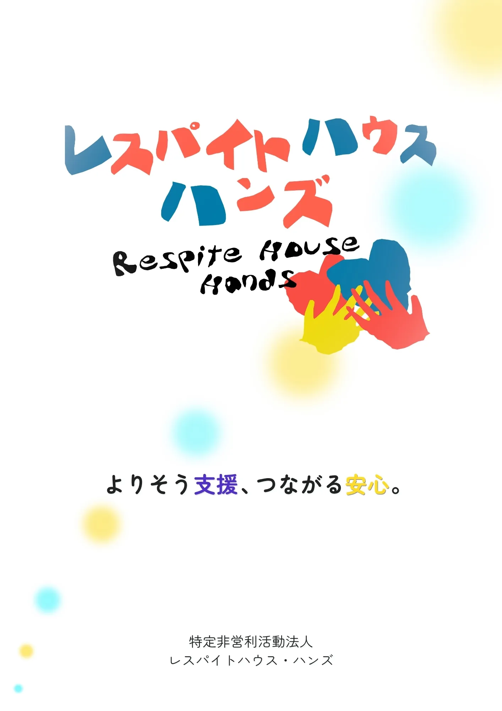
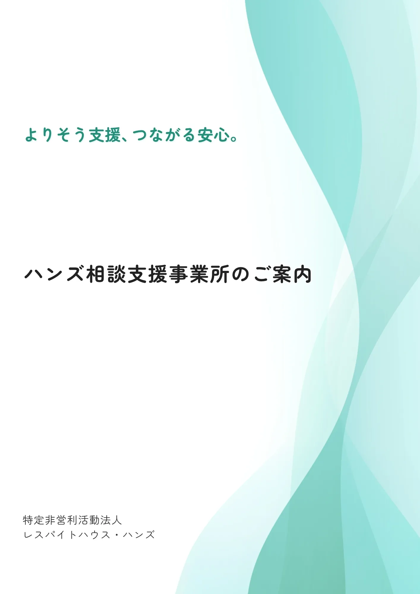
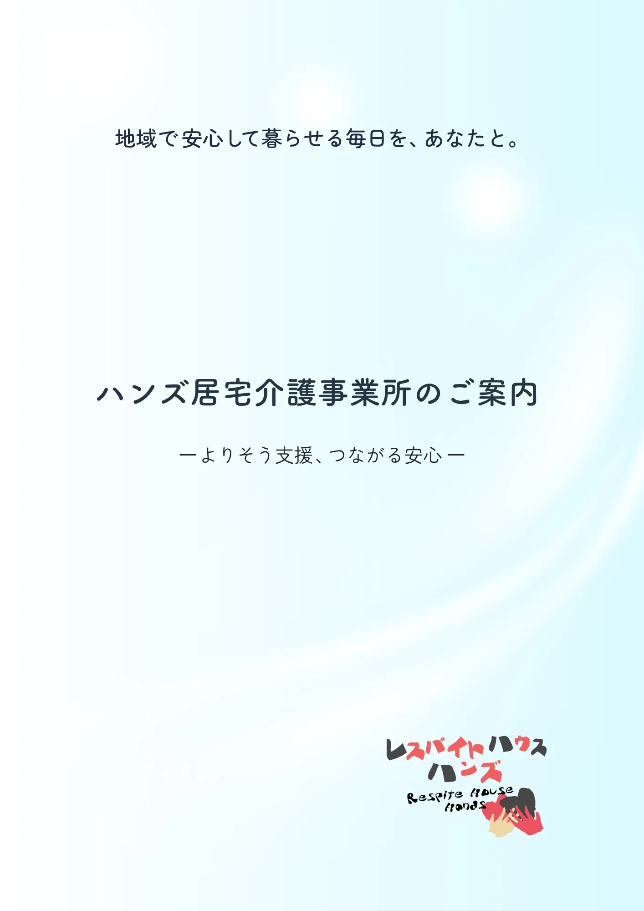
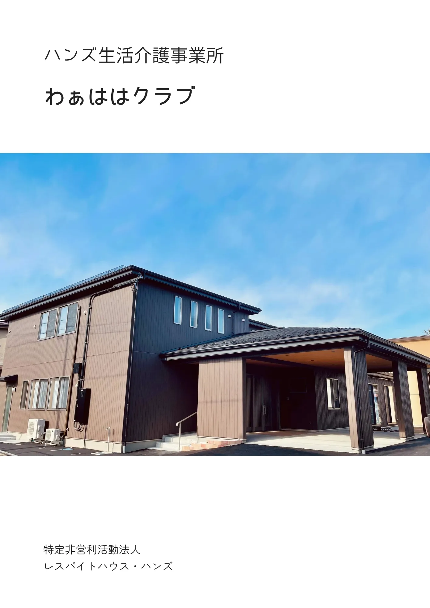
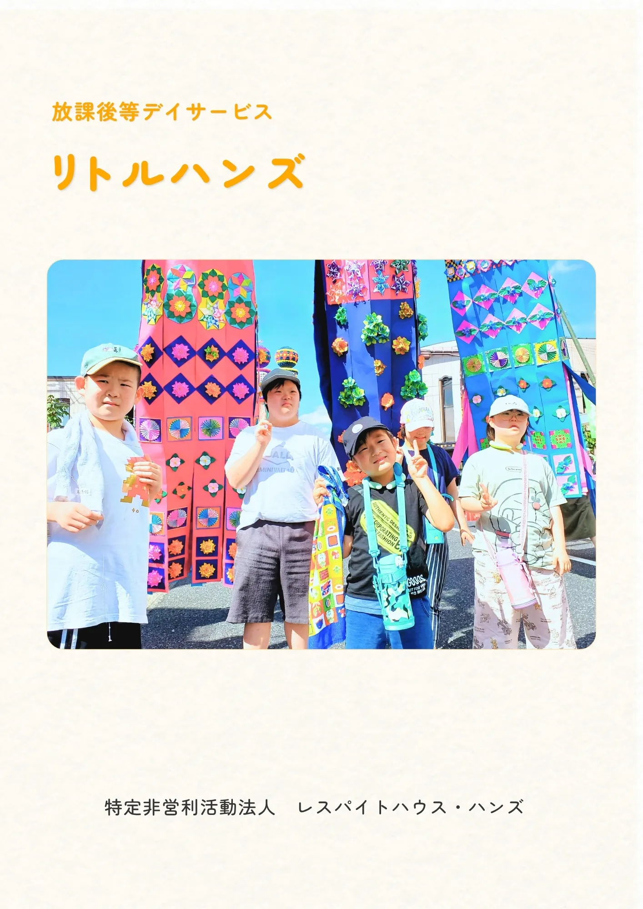
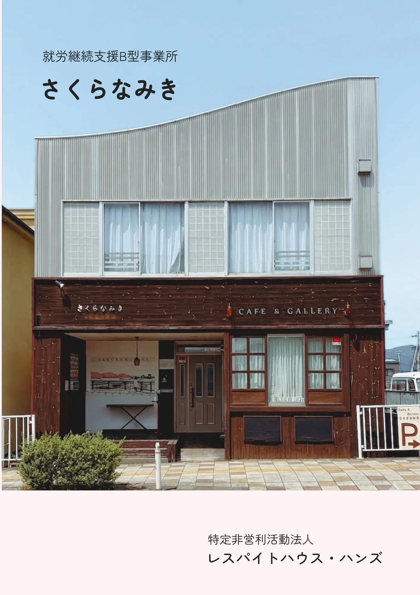

パンフレット・資料ダウンロード
レスパイトハウス・ハンズが運営する各事業所の案内パンフレットをPDF形式で配布しております。参考資料としてご活用ください。

ハンズ相談支援事業所
パンフレット
障害福祉サービスなどの利用申請に必要となる「サービス等利用計画」の作成や、日々の生活の中での困りごと、将来への不安に関する専門的な相談窓口のご案内です。
PDFをダウンロード (約1.4MB)
ハンズ居宅介護事業所
パンフレット
ご自宅を訪問し、入浴や排せつ、食事などの「身体介護」をはじめ、調理や洗濯、買い物などの家事援助を行い、住み慣れた地域での安心を支えるホームヘルプサービスのご案内です。
PDFをダウンロード (約2.1MB)
わぁははクラブ
（生活介護事業所）
学校卒業後の日中活動を支援する場として、ひとりひとりの個性を大切にする生活介護事業所です。日常の健康管理、具体的な支援内容についてご案内しています。
PDFをダウンロード (約3.4MB)
リトルハンズ
（放課後等デイサービス）
学校の放課後や長期休暇中、子どもたちが安心して過ごせる居場所を提供する放課後等デイサービスのご案内です。遊びや創作活動、集団行動の体験を通して生活能力の向上や自立に向けた支援プログラムなどをご確認いただけます。
PDFをダウンロード (約3.8MB)
さくらなみき
（就労継続支援B型事業所）
働くことに不安のある方が、毎日の美味しいお弁当製造・販売作業を通じて自分のペースでステップアップを目指す事業所案内です。作業内容や利用の流れをまとめています。
PDFをダウンロード (約3.2MB)